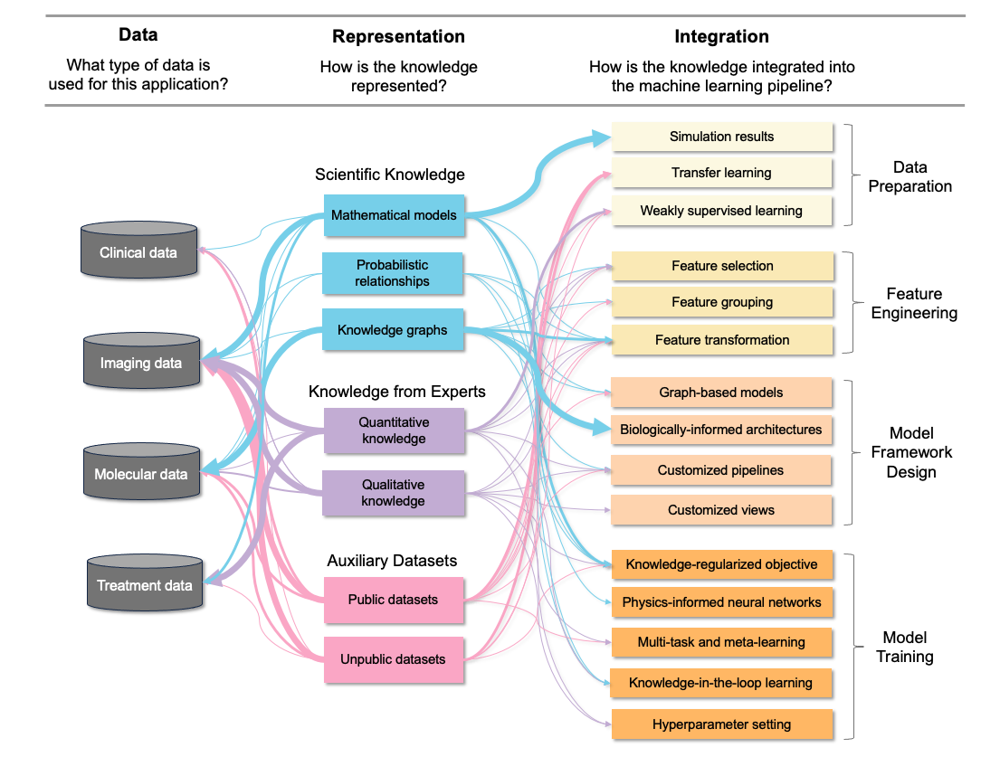

Knowledge-Informed Machine Learning for Cancer Applications
Machine Learning for Cancer
Cancer remains one of the most challenging diseases to treat in the medical field, with its incidence escalating alongside the increasing global life expectancy. Machine learning has enabled in-depth analysis of rich multi-omics profiles and medical imaging for cancer diagnosis and prognosis. Still, cancer applications present several modeling challenges for machine learning models, including the limited labeled sample sizes, the intricate interplay of high-dimensionality data types, the heterogeneity observed among patients and within tumors, and concerns about model interpretability.
One strategy to tackle these challenges is to integrate biomedical knowledge into machine learning models, referred to as knowledge informed machine learning (KIML). By regularizing the learning process using domain knowledge, the accuracy, robustness, and interpretability of models can be improved. Over the past decase, knowledge-informed machine learning has garnered increasing interest and demonstrated success across scientific, engineering, and health applications, particularly as a solution for settings with limited training data.
A Review of KIML for Cancer
Here, we focus on knowledge informed machine learning models applied in the cancer domain, where rich biomedical knowledge exists. We reviewed 127 related papers since 2012, including both machine learning and deep learning studies.
All papers were categorized based on three dimensions:
- What type of data is used for this application?
- In what form is the knowledge represented?
- How is the knowledge integrated into the machine learning pipeline?
An overview of the surveyed papers by category is shown below:
 Figure 1. Taxonomy of knowledge-informed machine learning in cancer diagnosis and prognosis. Our literature review categorizes existing along three dimensions: type of data, form of knowledge representation, and strategy for knowledge integration. Note that one paper may be included in more than one category. The thickness of the paths indicates the relative frequency of papers in each area (thin: one to four papers; medium: five to nine papers; thick: equal or more than ten papers
Live Summary Table
Below are studies compiled from our review. This website is meant as (1) a resource for those looking to use knowledge informed machine learning for their application (healthcare or non-health related) but unsure how each component is realized in practice, and (2) a snapshot of knowledge informed machine learning as an emerging field.
Use this link to submit a paper to be added to this table. We will update the table every month.
| Paper | Medical Objective | Categorization | Description |
|---|---|---|---|
| 2023 - Zhang - Accurate TCR-pMHC interaction prediction using a BERT-based transfer learning method | Prediction of TCR-pMHC binding for development of cancer immunotherapy | Data: Clinical Representation: Auxiliary Datasets - public Integration: Transfer learning | The authors proposes a TCR-BERT embedding model, a pre-trained architecture based on BERT. Training was done on over 113,000,000 CDR3beta sequeances from TCRdb database, coverting over 29 diseases and 10 tissues. The model was trained using masked language modeling tasks. The authors also propose a pMHC-BERT embedding model that share similar architecture as the TCR embedding model. Finally, the TABR-BERT model is trained to predct TCR-pMHC interaction. This approach mitigates the challenge of limited training data in TCR-pMHC binding prediction models. |
| 2023 - Wysocki - Transformers and the Representation of Biomedical Background Knowledge | Natural Language Inference in the context of a cancer precision medicine inference task to support Clinical s in the evaluation of the Clinical significance of findings compared to existing evidence | Data: Clinical Representation: Auxiliary Datasets - public Integration: Transfer learning | This paper compared two transfromers specialized for the biomedical domain (BioBERT and BioMegatron), both pre-trained on large biomedical text corpora (PubMed). The comparison evaluates their ability to capture entities, complex relationships, biomeidcal facts, etc. |
| 2023 - Weiskittel - Network Biology-Inspired Machine Learning Features Predict Cancer Gene Targets and Reveal Target Coordinating Mechanisms | Predict dependency of genes to cancer lineage | Data: Molecular Representation: Scientific Knowledge - Knowledge Graph Integration: Feature transformation | For each cancer type, the ARACNE algorithm was used to create regulatory networks for each cancer lineage in DepMap using Cancer Cell Line Encyclopedia RNAseq data. For each gene in each lineage-specific regulatory network, the following were extracted: (i) network features, (ii) number of cancer halllmark neighbors, (iii), sum of weights, and (iv) length of path to cancer-associated genes from the Cancer Gene Census. |
| 2023 - Wang - Quantifying intra-tumoral genetic heterogeneity of glioblastoma toward precision medicine using MRI and a data-inclusive machine learning algorithm | Predict the regional genetic alteration of three GBM driver genes (EGFR, PDGFRA and PTEN) | Data: Radiologic imaging Representation: Knowledge from Experts - Quantitative Integration: Weakly supervised learning | A novel Weakly Supervised Ordinal Support Vector Machine (WSO-SVM) was proposed to integrate unlabeled samples with imprecise/interval labels. The ordinal relationships between labels was considered in the formulation of WSO-SVM. |
| 2023 - Wang - A Novel Hybrid Ordinal Learning Model with Health Care Application | Predict the regional genetic alteration of three GBM driver genes (EGFR, PDGFRA and PTEN) | Data: Radiologic imaging Representation: Knowledge from Experts - Quantitative Integration: Weakly supervised learning | A Hybrid Ordinal Learner (HOL) was proposed to integrate samples with both precise and interval labels to train a robust Ordinal Learner (OL) model. The domain knowledge about imprecise labels of unlabeled samples, and ordinal relationships between labels is considered in the model. The model can be formulated as an optimization problem with ordinal constrains. A novel conversion method was developed that converts the HOL formulation into an equivalent formulation of learning a set of binary classifiers with coupled parameters. |
| 2023 - Shoemaker - Bayesian feature selection for radiomics using reliability metrics | Selection of radiomic features | Data: Radiologic imaging Representation: Knowledge from Experts - Quantitative Integration: Feature selection | The authors assign a prior distribution over gene coefficients, which allows more flexibilty. The inclusion of each feature is represented via a latent indicator. Prior knowledge about genes that are important or pairs of genes that are related can be used to specify this latent indicator. |
| 2023 - Savchenko - Mathematical modeling of BCG-based bladder cancer treatment using socio-demographics | Predict tumor cell growth with personalized BCG models for improved treatment of breast cancer | Data: Clinical Representation: Scientific Knowledge - Mathematical Models Integration: Knowledge-regularized objective | This study aims to improve the Bacillus Calmette-Gérin (BCG)-based treatment protocols by changing the “one-size-fits-all” approach with a more personalized one. This was done by integration of a machine learning component which is used to assess and adjust the model’s parameters over individuals and over time. Specifically, in the BCG model, the scalar parameters were replaced with functions that depend on time and the socio-demographics of the patient, and a term associated with the presence of immune cells based on the level of the patient’s activeness was added to the immune cell populations. The authors carefully designed a parameter fitting procedure to estimate the personalized model parameters overcoming the limited labeled samples (and explained right after): |
| 2023 - Peng - Boundary delineation in transrectal ultrasound images for region of interest of prostate | Segment prostate from transrectal ultrasound (TRUS) images for brachytherapy for prostate cancer | Data: Radiologic imaging Representation: Knowledge from Experts - Quantitative Integration: Hyperparameter setting | Among the four common imaging modalities used for prostate diagnosis, TRUS has a higher dependence on prior information regarding shape features for prostate segmentation. This study proposes a semi-automatic contour detection that adopts radiologist-defined data seed points as a prior. The seed points are important because the segmentation algorithm (principal curve-based method) assumes that seed point is perfect without any abnormal points. |
| 2023 - Meaney - Deep learning characterization of brain tumours with diffusion weighted imaging | Predict tumor progression curve and estaimte patient-specific tumor parameters of the PI model for patients with blioblastoma multiforme (GBM) for personalzed treatment | Data: Radiologic imaging Representation: Scientific Knowledge - Mathematical Models Integration: Physics-informed Neural Networks | The PI model need two parameters to run. However, accurately estimating these two parameters is quite challenging. Existing appraoch use sumary measurements taken from imaging with several mathematical assumptions, which ignores granular measurements. The authors propose a deep learnning model to provide patient-specific estimates of the PI model parameters and simultaneously give a full forecast of the intermediate GBM progression curve. First, a cellularity map is obtained from the image using rules derived from known mapping between ADC nad tumor cellularity and the tissue class. Then, cellularity map is used as inputs of the deep learning model. PI parameters are incorporated into the customized loss, which is designed following concepts of PINN. |
| 2023 - Mao - Weakly Supervised Transfer Learning with Application in Precision Medicine | Predict Tumor Cell Density for patients with GBM | Data: Radiologic imaging Representation: Knowledge from Experts - Quantitative Integration: Weakly supervised learning | To build personalized models despite limited labeled samples are avaiable for each patient, this paper employed two strategies: (i) transfer learning from other patients with the same disease, and (ii) weakly supervised learning using weak labels derived from radiologist's expertise. Specifically, the enhancing ROI and non-enhancing ROI annotations were used to extract pairs of unlabeled samples that are expected to have ordering relationship in their labels. An additional term is added to the loss function to penalize the wrongly ordered weakly labeled pairs. |
| 2023 - Imperio - Pathologist Validation of a Machine Learning–Derived Feature for Colon Cancer Risk Stratification | evaluate whether pathologist scoring of a histopathologic feature previously identified by machine learning is associated with survival among patients with colon cancer. | Data: Pathologic imaging Representation: Knowledge from Experts - Quantitative Integration: Other | Tumor adipose feautre (TAF) was previously identified via a prognostic deep learning model developed with an independent colorectal cancer cohort. In study had 2 pathologists conduct semiquantitative scoring for TAF on colon cancer cases to verify the prognostic value of TAF for overall survival. |
| 2023 - Cho - Interpretable Meta-learning of Multi-omics Data for Survival Analysis and Pathway Enrichmen | Survival analysis/prediction for patients with cancer | Data: Molecular Representation: Auxiliary Datasets - public Integration: Multitask learning | Proposed a meta-learning approach that uses various combinations of integrated omics datasets to train a prediction model of cancer survival. Results showed that this meta-learning design allowed finding robust functional and semantic relationships among genes. |
| 2023 - Bogatu - Meta-analysis informed machine learning- Supporting cytokine storm detection during CAR-T cell Therapy | Predict future occurrence of Cytokine Release Syndrome, a common adverse effects of chimeric antigen receptor therapies in cancer treatment | Data: Clinical Representation: Knowledge from Experts - Quantitative Integration: Weakly supervised learning | The challenge to tackle is the limited sample size. The authors defined a knowledge base (KB) of statistical biomedical facts extracted from domain literature, which they call a metareview-informed diagnosis process. The KB was used to augment samples of biomarker concentration measurements through quantifying the degree of similarity between the given measurement value and the statistical values reported in each study in the domain literature |
| 2022 - Xie - SRG-Vote- Predicting Mirna-Gene Relationships via Embedding and LSTM Ensemble | Predict potetial miRNA-gene interactions from large public datasets which might contribute to future diagnosis, prevention, and cancer therapy | Data: Molecular Representation: Scientific Knowledge - Knowledge Graph Integration: Graph models | The authors propose a voting system composing of three types of embeddings: (i) sequential embedding of miRNA and gene sequence via doc2vec, (ii) geometrical embedding of miRNA and gene via role2vec, and (iii) a graph convolutional networks embedding from miRNA-miRNA and gene-gene networks. Pairs of miRNA-gene were fed into LSTM and B-LSTM models to predict their relationships. |
| 2022 - Wang - Biologically-informed deep neural networks provide quantitative assessment of intratumoral heterogeneity in post-treatment glioblastoma | Prediction of three gene modules: recurrent tumor tissue, treatment-induced changes, and normal brain tissue | Data: Radiologic imaging Representation: Knowledge from Experts - Quantitative Integration: Weakly supervised learning | Proposed a two-stage model pipeline, including BioNet_Neu and BioNet_ProInf, to accommodate the hierarchical relationship of three gene modules relevant to GBM prognosis. Predictions are first generated for the gene module that has more supervision from biological knowledge. The outputs of this step then provided additional information for the interplay of the other two gene modules. The BioNet_ProInf is a multitask, semi-supervised learning model with a customknowledge attention loss. |
| 2022 - Wang - A Novel Deep Learning Method to Predict Lung Cancer Long-Term Survival With Biological Knowledge Incorporated Gene Expression Images | Predict long-term survival for patients with lung cancer | Data: Molecular Representation: Scientific Knowledge - Knowledge Graph Integration: Feature transformation | To overcome high-dimensionality, converted gene data into images incorporating pathway knowledge. Specifically, the knowledge provides hierarchical data where genes and proteins are root and gene expression are leaves. Used the hierarchical index sorting by mean across all samples to put gene expressions into a square matrix. Then, trained a CNN using four inputs: two gene expression images and two sets of Clinical data. |
| 2022 - Shen - Identify Representative Samples by Conditional Random Field of Cancer Histology Images | 1. Identify representative tissues within whole-slide images. 2. Classification of cancer prototype for colorectal cancer tissues. 3. Active learning -find representative patches to label to reduce annotation costs. | Data: Pathologic imaging Representation: Knowledge from Experts - Qualitative Integration: Knowledge-regularized objective | Recorded the spatial coordinates of each patch on the image grid. Then, used conditional random field (CRF) to model the probability of classes based on the classification output and spatial coordinates. The CRF model measures the spatial correlations to derive costs of different offsets and dynamically learns offsets that lead to locations of most representative patches. CNN was used as a feature extractor. The model can be used as feature extractor for any state-of-the-art classifiers. The model can also be used for active learning to reduce annotation costs. |
| 2022 - Perez Raya - Thermal Modeling of Patient-Specific Breast Cancer with Physics-Based Artificial Intelligence | Learn parameters of a physics model (model the breast surface temperature from thermal properties of the tumor in order to detect tumor location) | Data: Radiologic imaging Representation: Scientific Knowledge - Mathematical Models Integration: Physics-informed Neural Networks | Used physics-informed neural network to learn the parameters of a bioheat equation. Physics-informed neural network uses physical constraints, boundary conditions, and a PDE equations to define the loss function. |
| 2022 - Peng - H-ProSeg- Hybrid ultrasound prostate segmentation based on explainability-guided mathematical model | Segment prostate from transrectal ultrasound (TRUS) images for brachytherapy for prostate cancer | Data: Radiologic imaging Representation: Knowledge from Experts - Quantitative Integration: Hyperparameter setting | This study proposes a semi-automatic contour detection that adopts radiologist-defined data seed points as a prior. The model has three sub-networks. The first sub-network uses an improved principal curve-based methods to obtain seed points and their projection index. The second sub-network uses a differential eovlution-based neural network. The third sub-network uses the neurla network to explain the smooth mathematical description of the prostte contour. |
| 2022 - Ma - DualGCN- a dual graph convolutional network model to predict cancer drug response | Predict anti-cancer drug response (sensitive vs resistant). | Data: Molecular Representation: Scientific Knowledge - Knowledge Graph Integration: Feature transformation | Used chemical structure of drugs to represent each drug as a graph, where nodes are atoms and edges are connection between atoms. Used PPI network to represent each cancer sample as a graph, where nodes are proteins (genes) and edges are interaction between proteins. The two graphs as separately fed into GCN and their embeddings are concatenated and fed into MLP to predict drug response. |
| 2022 - Liu - Multimodal Brain Tumor Segmentation Using Contrastive Learning Based Feature Comparison with Monomodal Normal Brain Images | Segment brain tumor from MRI. | Data: Radiologic imaging Representation: Auxiliary Datasets - private Integration: Feature transformation | This paper used the MRI from healthy controls to help segment tumor for tumor brains. One challenge is that normal brain images are often monomodal and tumor brain images are multimodal. To tackle this, the authors used a "normal appearance network" to obtain a reconstructed "normal brain" image for the tumor brains that is comparable to the healthy controls. In detail, they trained IntroVAE using T1 image of healthy controls to obtain a lower dimensional representation of normal brain appearance, then projected the tumor brain image to this representation and obtain a reconstruction of "normal brain appearance". Then, in the segmentation network, they i) used a simple Siamese network to align the feature maps of the normal and tumor images in the normal regions, and ii) compared the feature maps of the normal and tumor images to identify low feature consistency regions as tumor regions. |
| 2022 - Liu - MetBERT- a generalizable and pre-trained deep learning model for the prediction of metastatic cancer from Clinical notes | Predict cancer metastasis (all types of cancer) | Data: Clinical Representation: Auxiliary Datasets - public Integration: Transfer learning | Used four language models pre-trained on Clinical and scientic data (BioBERT, BlueBERT, Clinical BERT, PubmedBERT) and fine-tuned them using in-domain data (EHR Clinical notes). |
| 2022 - Li - Coupling Deep Deformable Registration with Contextual Refinement for Semi-Supervised Medical Image Segmentation | Segmentation of anatomical structures from medical images (not targeted for tumor but can be applied to tumor and is related to cancer diagnosis) | Data: Radiologic imaging Representation: Scientific Knowledge - Probabilistic Relationships Integration: Knowledge-in-the-loop | First, the authors applied an image registration model (deep diffeomorphic registration model) that allows regions predefined on templates to be overlaid on the image and produces a segmentation map of anatomical structures. Then, this segmentation map is refined by warping with the probabilistic atlas map and taking the nearest interpolation. |
| 2022 - Lee - A Novel Knowledge Keeper Network for 7T-Free but 7T-Guided Brain Tissue Segmentation | Segment brain tissue from MRI (not explicitly for cancer but related) | Data: Radiologic imaging Representation: Auxiliary Datasets - private Integration: Transfer learning | It is known that 7T images provide better insights for diagnosis. However, 7T MRI are not always available. This paper aims to build 7T-free but 7T-guided brain tiissue segmentation model. They used paired 3T-7T images to train a module that extracts 7T-like representations from 3T images using knowledge distillation and a discriminator. At inference time, the network is able to use only 3T images to do segmentation with 7T-image guided information. |
| 2022 - Huang - MTL-ABS3Net- Atlas-Based Semi-Supervised Organ Segmentation Network With Multi-Task Learning for Medical Images | Segmentation of organs from medical images (not targeted for tumor but can be applied to tumor.) | Data: Radiologic imaging Representation: Scientific Knowledge - Probabilistic Relationships Integration: Knowledge-in-the-loop | First, trained a segmentation network using labeled images. Applied the trained network on unlabeled data and computed a confidence map by comparing the segmentation results with the probability atlas. The high confidence pixels were selected and set as ground truth to compute loss for unlabeled samples. |
| 2022 - Bhattacharya - Integrating zonal priors and pathomic MRI biomarkers for improved aggressive prostate cancer detection on MRI | Pixel-level classification/diagnosis of prostate cancer (normal, indolent, aggressive classes) from MRI | Data: Radiologic imaging Representation: Scientific Knowledge - Probabilistic Relationships Integration: Hyperparameter setting | Zonal priors contain Clinical domain knowledge that aggressive cancer is more likely to occur in some zones. The zonal priors were formulated as mean probabilities of each class, conditional probabilities of each class given the zone and conditional probabilities of each zone given the class. The authors proposed two ways to integrate the zonal prior probabililites. One way is to to use it as a prior in the bayes decision model. |
| 2021 - Zhou - Multi-task learning for segmentation and classification of tumors in 3D automated breast ultrasound images | Classify and segment tumor in 3D automated breast ultrasoudn images for breast disease diagnosis and surgical planning | Data: Radiologic imaging Representation: Knowledge from Experts - Qualitative Integration: Multitask learning | Since the benigh and malignant tumors usually have different shape characteristics, the authors assume that the segmentation and the classification task can help each other. They designed a multi-task model that simultaneously does segmentation and classification. Additionally, since ABUS volumes have severe noise and tumors in ABUS have ambiguous boundaries, they proposed a iterative feature-refining strategy during training to refine the feature maps using probability maps obtained from previous iterations. |
| 2021 - Zhou - 3D multi-view tumor detection in automated whole breast ultrasound using deep convolutional neural network☆ | Detect tumor from 3D images for patients with breast cancer | Data: Radiologic imaging Representation: Knowledge from Experts - Quantitative Integration: Hyperparameter setting | (1) Defined the anchor size/aspect ratios for each of the three views based on the expected tumor size from each view. For example, tumors have closer to square shape in saggital view and elongated rectangular shape in axial and coronal views. (2) Also, tumors can be as small as occupying 2% of the full image which makes them hard to detect. So redesigned the VGG feature extraction network to better detect small tumors: i) added deconvolution layers to enlarge the last feature map, ii) concatenated feature maps that represented local and global textures. |
| 2021 - Zhao - DeepOmix- A scalable and interpretable multi-omics deep learning framework and application in cancer survival analysis | Prognosis of lower grade glioma using multi-omics data | Data: Molecular Representation: Scientific Knowledge - Knowledge Graph Integration: Biologically-informed neural networks | This work proposes DeepOmix, a deep learning model for cancer survivla analysis using multi-omics datasets. This network can incorporate prior biological knowledge of gene functional module networks as the function module layer (the second layer). The number of nodes and edges between the first and second layer are defined based on knowledge from tissue networks, gene co-expression networks, or prior biological signaling pathways. |
| 2021 - Zhang - Predicting Anticancer Drug Response With Deep Learning Constrained by Signaling Pathways | Predict drug response for multiple cancer cell lines. | Data: Molecular Representation: Scientific Knowledge - Knowledge Graph Integration: Biologically-informed neural networks | This work proposes consDeepSignaling, a deep learning model for drug response prediction. To reduce number of features and make the model more interpretable, 46 signaling pathways (from KEGG) and 929 genes were used to build the deep learning model. The layers corresponded to input layer, gene layer, pathway layer, and other hidden layers. Layer's connection also followed known biological knowledge. |
| 2021 - Zangooei - Multiscale computational modeling of cancer growth using features derived from microCT images | Predict tumor and microvascular network growth patterns for breat cancer. | Data: Radiologic imaging Representation: Scientific Knowledge - Mathematical Models Integration: Knowledge-in-the-loop | To simulate complicated spatiotemporal and multiscale biological behavior of cancer growth, this paper used three multiscale image-based PDE models of tumor growth. The simulation performed at microscope, mesoscopic, and macroscopic scale. The model environment was formulated on a regular grid of lattice sites called tumor microenvironments. Knowledge was used to setup this environment with regulatory substances, diffusible factors, cancer cells, and pathways. A deep reinforcement learning framework was setup, with discrete policies that are functional map states. At microscope scale, an agent that seek to have a desired phenotype at each simulation time step. At mesoscopi sale, cells and vessels are represented as agents with their own phenotype. A neural netowrk predicts tumor cell growth. |
| 2021 - Weiss - PILOT: Physics-Informed Learned Optimized Trajectories for Accelerated MRI | Find optimized trajectories for accelerated MRI | Data: Radiologic imaging Representation: Scientific Knowledge - other Integration: Knowledge-regularized objective | This work aims to find optimized trajectories for accelerated MRI. Prior knowledge about the peak-current and the maximum slew-rate produced by the gradient coils were translated into geometric constraints in the optimization problem to ensure physically viable solutions. |
| 2021 - Wang - Knowledge-Infused Global-Local Data Fusion for Spatial Predictive Modeling in Precision Medicine | Predict brain tumor cell density (TCD) by a Gaussian Process based model. | Data: Radiologic imaging Representation: Scientific Knowledge - Mathematical Models Integration: Knowledge-regularized objective | Proliferation-invasion (PI) model is used to predict TCD. The difference between the predicted TCD from the proposed model and that from PI is constrained to be smaller than slack variables. (Soft constraints) |
| 2021 - Sanyal - Weakly supervised temporal model for prediction of breast cancer distant recurrence | Predict cancer recurrence for patients with breast cancer | Data: Clinical Representation: Auxiliary Datasets - private Integration: Weakly supervised learning | (Same model as Barnejee 2019). This work used a large set of Clinical notes to generate weak labels for training data, and trained a NLP model using the small, expert-labeled data and large, weakly labeled data. Used medical dictionary to clean the text data (combine related terms together, reduce sparsity). |
| 2021 - Ramirez - Classification of Cancer Types Using Graph Convolutional Neural Networks | Classification of cancer types (33 cancers and normal) | Data: Molecular Representation: Scientific Knowledge - Knowledge Graph Integration: Graph models | Two different input graphs were generated, a gene co-expression graph (based on correlation between gene expressions) and a protein-protein interaction graph from the STRING database. These inputs are passed into a graph convolutional layer followed by hidden layers and a classifier. |
| 2021 - Nave - Artificial immune system features added to breast cancer Clinical data for machine learning (ML) applications | Predict tumor size at different time points for breast cancer | Data: Radiologic imaging Representation: Scientific Knowledge - Mathematical Models Integration: Feature transformation | This study aims to use ML to predict the tumor size for each time point based on the imaging data. A mathematical model was used to extract immunological features, which are then used as inputs into ML model together with Clinical features |
| 2021 - Liu - TranSynergy- Mechanism-driven interpretable deep neural network for the synergistic prediction and pathway deconvolution of drug combinations | Predict efficiency of drug combination and serve as screening for downstream experimental evaluation | Data: Molecular Representation: Scientific Knowledge - Knowledge Graph Integration: Feature transformation | In the drug response prediction, the input are two drug molecules in the drug combination and a cell line (gene expressions). The authors argue that using the chemical structure of drugs as features it is not straightforward to connect with the cellular mechanisms of drug action. Biological representation based on drug-target interaction profile is a better strategy to infer the drug representation vector. They used protein-protein-interaction network features. Random walk with restart algorithm was applied on a protein-protein interaction network to infer drug-target profile as the drug features. From gene expressions, the gene-gene dependency profiles were extracted. |
| 2021 - Liu - Real time volumetric MRI for 3D motion tracking via geometry-informed deep learning | Reconstruction of accelerated MRI | Data: Radiologic imaging Representation: Scientific Knowledge - other Integration: Customized model pipelines | In this neural network, the authors added an explicit geometry-module that encodes the k-space sampling patterns and known transforms between the k-space and image domains. |
| 2021 - Li - Informed Attentive Predictors- A Generalisable Architecture for Prior Knowledge-Based Assisted Diagnosis of Cancers | Predict (classification) whether a sample is tumoral or normal for different types of cancers. | Data: Molecular Representation: Scientific Knowledge - Probabilistic Relationships Integration: Feature transformation | This model outputs prediction as a function of the data-driven prediction and knowledge-based prediction. They generated knowledge-based predictions based on the intuition that samples whose difference with normal samples is more similar to the mutation patterns known from knowledge are more likely to be tumoral. In detail: 1) Extracted a knowledge vector representing gene mutation rate for each gene from an exterior data source. 2) Generated a reduced version of original feature vectors to match the dimensions of the knowledge vector. 3) Computed a general representation for normal samples by projecting original features into 1-d vector. 4) For each sample, computed their difference with this normal sample vector. The similarity between this difference and the knowledge vector determines the likelihood of a sample between tumor, thus, generates a knowledge-based “prediction”. 5) The final prediction is a function of the prediction by original data and from this knowledge-based prediction. |
| 2021 - Kaandorp - Improved unsupervised physics- informed deep learning for intravoxel incoherent motion modeling and evaluation in pancreatic cancer patients | Estimate three parameters of the Intravoxel incoherent motion (IVIM) model for diffusion-weighted imaging (DWI) | Data: Radiologic imaging Representation: Scientific Knowledge - Mathematical Models Integration: Physics-informed Neural Networks | Designed an unsupervised NN to predict the three IVIM parameters of interest. The model minimizes a physics-based loss that measures the difference between the original signal and “reconstructed” signal based on the IVIM model and NN estimated parameters. |
| 2021 - Joshi - OncoNet- Weakly Supervised Siamese Network to automate cancer treatment response assessment between longitudinal FDG PET CT examinat | Classify the treatment outcome (preogression, resolution, stable) of patients with lung cancer | Data: Radiologic imaging Representation: Auxiliary Datasets - private Integration: Weakly supervised learning | Since expert annotation is costly, this work used rule based heuristics to extract Standard Uptake Values (SUVmax) of metabolically active tumors from radiology reports. Then used differences in the SUVmax values between scans to derive the weak labels (progression, resolution, stable). This heuristic is based on the Lugano 2014 criteria for tumor evaluation, assessment, and prediciton. |
| 2021 - Johnson - Integrating transcriptomics and bulk time course data into a mathematical framework to describe and predict therapeutic resistance in cancer | Predict therapeutic resistance in breast cancer by improved model calibration | Data: Molecular Representation: Scientific Knowledge - Mathematical Models Integration: Knowledge-regularized objective | Mathematical models of tumor progression often include distinct subpopulations. Despite these models are calibrated to experimental data, single biomarkers do not capture longitudinal patterns. The study proposed an integrated model calibration scheme that integrates information from two data sources: (i) from longitudinal population data sampled at high temporal resolution for a number of doses, and (ii) machine learning outputs that estimate the phenotypic composition at three time points before and after treatment. The ML model was trained to classify phenotype of cells based on its transcriptome. |
| 2021 - He - Cross-modality brain tumor segmentation via bidirectional global-to-local unsupervised domain adaptation | Segment brain tumors from multi-modal MRI for tumor diagnosis and treatment | Data: Radiologic imaging Representation: Auxiliary Datasets - private Integration: Transfer learning | This paper proposed a framework that can segmenta brain tumors in one MRI modality (target domain) when trained on another MRI modality (source domain). To account for domain shift, they used a bidirectional module that learns how to generate synthetic image from one domain to another, and a global-to-local adaptor that aligns the real and synthetic images. Also, spatial-wise and channel-wise attention maps were used to transfer the most discriminate part of features through domains, assuming that silences of the images are consistent inter-domain. |
| 2021 - Feng - Investigating the relevance of major signaling pathways in cancer survival using a biologically meaningful deep learning model | Predict drug response for cancer patients (breast cancer, lung, glioblastoma, skin) | Data: Molecular Representation: Scientific Knowledge - Knowledge Graph Integration: Biologically-informed neural networks | The 46 signaling pathways from four types of cancer and 1967 genes were selected to design a customized deep learning model architecture. The input layer consisted two input features (gene expression and copy number variation) for each gene. Then genes were connected to the pathways based on known connections. Model was evaluated on four datasets of four types of cancer. |
| 2021 - Erion - Improving performance of deep learning models with axiomatic attribution priors and expected gradients | Predict (regression) drug response for patients with acute myeloid leukemia (AML). | Data: Molecular Representation: Scientific Knowledge - Knowledge Graph Integration: Knowledge-regularized objective | The knowledge graph is used to regularizes the loss function so that relative feature contributions are consistent with the known probability of integration of gene (called graph prior). |
| 2021 - Elmarakeby - Biologically informed deep neural network for prostate cancer discovery | Predict the disease sate (classification) of prostate cancer and better understanding of the relationship between Molecular features and the disease. | Data: Molecular Representation: Scientific Knowledge - Knowledge Graph Integration: Biologically-informed neural networks | A customized neural network architecture is designed based on biological knowledge, where each layer and node have a specific biological interpretation, and only connections that follow known pathways are activated and others are zero-out. |
| 2021 - Chuang - Convolutional neural network for human cancer types prediction by integrating protein interaction networks and omics data | Predict normal vs tumor samples for 11 cancer types | Data: Molecular Representation: Scientific Knowledge - Knowledge Graph Integration: Feature transformation | A large number of PPIs of human proteins were collected from five public databases. Laplacian clustering approach was used to map PPI networks into 2D space, then combined with gene expression data, to generate normal and tumor sample images for CNN model training. |
| 2021 - Azher - Development of Biologically Interpretable Multimodal Deep Learning Model for Cancer Prognosis Prediction | Predict patient survival risk scores for four types of cancers (colon, bladder, skin, liver) | Data: Molecular Representation: Scientific Knowledge - Knowledge Graph Integration: Biologically-informed neural networks | First, pre-trained an encoder (VAE) that has biologically informed architecture. The nodes of the first two layers represent gene entities. The connections are initialized based on known biological relationships (CpG to gene, gene to pathway). After VAE is pre-trained, the encoder weights are transferred as initialization for an ANN to learn prediction model. |
| 2021 - Anastopoulos - Patient Informed Domain Adaptation Improves Clinical Drug Response Prediction | Predict patient drug response using cross-domain data (cell line and primary tumor) | Data: Molecular Representation: Auxiliary Datasets - private Integration: Knowledge-regularized objective | Used Mean Maximum Discrepancy (MMD) as a loss term to encourage alignment of the latent space of cell line and tumor samples. Additionally, uses weight sharing for both cell line and tumor sample data neural networks. Represented each drug molecule as a graph (nodes are atoms and edges are bonds between atoms) then extracted latent representation via GCN. |
| 2020 - Vu - Deep convolutional neural networks for automatic segmentation of thoracic | Segment thoracic organs‐at‐risk in radiation oncology for treatment planning of lung cancer, esophagus cancer, or breast cancer. | Data: Radiologic imaging Representation: Auxiliary Datasets - public Integration: Transfer learning | Transfer learning is applied by using locking the weights from a VGG16 image classification model trained on ImageNet. When adapting to the target dataset, activation function is modified, a batch normalization layer and a dropout layer are added. |
| 2020 - Seninge - Biological network-inspired interpretable variational autoencoder | Knowledge discovery and better interpretation of biological mechanisms and the underlying gene regulatory networks (GRN) of single-cell GBM | Data: Molecular Representation: Scientific Knowledge - Knowledge Graph Integration: Biologically-informed neural networks | Used a data-driven encoder to capture the complex patterns and a sparse knowledge-based decoder to allow explainability. In detail, the decoder is a single linear layer that zeros-out the connection between the latent layer and input layer if it belongs to a known biological abstraction. Also, the decoder is constraint to positive weights to maintain explainability of direction of biological activity. |
| 2020 - Ozdemir - A 3D Probabilistic Deep Learning System for Detection and Diagnosis of Lung Cancer Using Low-Dose CT Scans | Screening and risk diagnosis of lung cancer | Data: Radiologic imaging Representation: Knowledge from Experts - Quantitative Integration: Weakly supervised learning | Used expert-assigned scores as noisy labels to train a malignancy ranking network. This network ranks segmented nodules within each CT scan by their malignancy risk. The top-k nodules are then used to train a multitask classification network. (The intuition is that each CT scan may have a large number of nodules, the ranking helps reduce noise and focus on those that are more likely to be malignant.) |
| 2020 - Oh - PathCNN- interpretable convolutional neural networks for survival prediction and pathway analysis applied to glioblastoma | Predict long-term survival for patients with glioblastoma multiforme (GBM). | Data: Molecular Representation: Scientific Knowledge - Knowledge Graph Integration: Feature transformation | For each of the three omics types, organized data into a matrix where each column represent a pathway and each row represent a gene. Then, performed PCA on each matrix. Finally, combined PCs of all omics types into a pathway image ordering the pathways based on their correlation. |
| 2020 - Liu - A Natural Language Processing Pipeline of Chinese Free-Text Radiology Reports for Liver Cancer Diagnosis | Classification of cancer vs normal for patients with liver cancer | Data: Clinical Representation: Knowledge from Experts - Qualitative Integration: Feature selection | Used expert knowledge to extract Clinical ly meaningful features (also called named entity recognition), which are then used for classification. First, used expert knowledge to derive a specialized lexicon (a list of Clinical ly relevant words and synonyms). Then, trained a language model using both original text and lexicon coded text to detect relevant entities. |
| 2020 - Leung - A physics-guided modular deep-learning based automated framework for tumor segmentation in PET | Segmentation of tumor from PET | Data: Radiologic imaging Representation: Scientific Knowledge - Mathematical Models Integration: Simulation | This method tackles the challenges of limited spatial resolution of PET and limited labeled data. Physic-sbased simulation is used generate synthetic images. Specifically, first- and second-order statistics for the intensity, size, shape, intra-tumor heterogeneity, and tumor-to-background intensity ratio are extracted. The kernel distribution of tumor descriptors are fed into a PET system modeling the major image-degrading processes in PET such as detector blurring with a 5 mm full-width-at-half-maximum (FWHM). Intra-tumor heterogeneity was simulated by incorporating unimodal variability in intensity values within the tumor and, for some tumors, by modeling the intensity distribution as a mixture model. Data from multiple patients were used to simulate patient heterogeneity. Tumor seed locations were manually selected such that generated tumors would appear at visually realistic locations. The simulated data is used to pre-train a U-Net. Real medical data is used to fine-tune the U-Net. |
| 2020 - Lee - Cancer subtype classification and modeling by pathway attention and propagation | Classification of sample type and knowledge discovery/interpretation of important pathways | Data: Molecular Representation: Scientific Knowledge - Knowledge Graph Integration: Graph models | Pathways from KEGG are obtained as prior knowledge. Each pathway is represented as a graph. The gene expression profiles is amapped to the nodes of this pathway graph, where the node feature vector represent the numbe of genes in the pathway. The input graph is first passed to a GCN to capture localized patterns. One model is built for each pathway. Then, the pathway-level attention and ensemble-level attention are used to ensemble the features which are then used to produce final cancer subtype predictions. |
| 2020 - Kuenzi - Predicting Drug Response and Synergy Using a Deep Learning Model of Human Cancer Cells | Predict drug sensitivity of tumor cells | Data: Molecular Representation: Scientific Knowledge - Knowledge Graph Integration: Biologically-informed neural networks | Learnt genotype embedding using a network whose layers and connections are based on known biological processes. Learnt drug structure embedding using a CNN with the same number of output nodes as the genotype embedding so they can be concatenated. |
| 2020 - Kozłowska - Mathematical model predicts response to chemotherapy in advanced non-resectable non-small cell lung cancer patients treated with platinum-based doublet | Predict anticancer treatment response to chemotherapy to find optimal treatment schedule for patients with | Data: treatment Representation: Scientific Knowledge - Mathematical Models Integration: Knowledge-regularized objective | This study developed a method that combines mathematical mechanistic modeling with ML to estimate response to anticancer treatment for each patient. The authors replaced calibration of the mechanistic model using mixed-effect learning with calibration mainly based on a multivariate Gaussian-mixture model. |
| 2020 - Ke - Identifying patch-level MSI from histological images of Colorectal Cancer by a Knowledge Distillation Model | Identify microsatellite instability (MSI) status in colorectal cancer for better prognosis. | Data: Pathologic imaging Representation: Knowledge from Experts - Quantitative Integration: Knowledge-in-the-loop | Most existing models just use the whole-slide label as groudn truth for each patch in the whole-slide image. However, this causes mislabeling of many local patches. To address the mislabeling problem, a self-distillation model was first used to separate data into high fidelity and low fidelity patches. Then, one-shot active learning was used where pathologists picked up the most representative samples from high-fidelity data and tagged them as clean data for noise-robust training. The self-distillation model reduced the efforts of pathologists. |
| 2020 - He - Infusing Disease Knowledge into BERT for Health Question Answering, Medical Inference and Disease Name Recognition | Derive text data embeddings that can be used for downstream tasks including:1. consumer health question answering, 2. medical language inference, 3. disease name recognition. (Not just for cancer but I believe the diseases include some cancer) | Data: Clinical Representation: Auxiliary Datasets - public Integration: Weakly supervised learning | Used the structure of Wikipedia to extract “weakly-supervised passages” containing disease knowledge. Specifically, the title of the article is the disease name, and the title of the section is the topic aspect of the disease. Then, used these passages to create additional samples used in training. |
| 2020 - Garcia - Transfer learning with convolutional neural networks for cancer survival prediction using gene-expression data | Predict progression of lung cancer | Data: Molecular Representation: Auxiliary Datasets - public Integration: Transfer learning | Pre-trained CNN on data of 31 cancers except lung cancer, then fine-tuned using lung cancer data. |
| 2020 - Fortelny - Knowledge-primed neural networks enable biologically interpretable deep learning on single-cell sequencing data | Predict cell type from gene expression | Data: Molecular Representation: Scientific Knowledge - Knowledge Graph Integration: Biologically-informed neural networks | Prior knowledge from signaling pathways and gene-regulartory networks are used to build knowledge-primed neural networks. Each node corresponds to a protein or a gene, and each edge corresponds to a regulatory relationship documented in biological databases. |
| 2020 - Deng - Pathway-Guided Deep Neural Network toward Interpretable and Predictive Modeling of Drug Sensitivity | Predict drug sensitivities and undersand mechanisms of drug action | Data: Molecular Representation: Scientific Knowledge - Knowledge Graph Integration: Biologically-informed neural networks | To reduce dimensionality, the authors selected 977 landmark genes. Inputs to the network include cell line feature nodes and drug target feature nodes. The architecture is customized by adding a layer of pathway nodes and their connections to input gene nodes. The rest of network are data-driven and fully connected. |
| 2020 - Boso - Drug delivery- Experiments, mathematical modelling and machine learning | Simulate tumor growth and drug action for a proper modeling of drug delivery and efficacy in anticancer therapy | Data: treatment Representation: Scientific Knowledge - Mathematical Models Integration: Knowledge-regularized objective | The drug-induced cell death rate is a parameter difficult to estimate experimentally. Machine learning was found helpful because it is able to catch the more complex physics and therefore to identify the necessary parameters. Neural networks was used to learn the relation between the involved quantities, by learning the mapping of input - output data. |
| 2019 - Zheng - Semi-supervised segmentation of liver using adversarial learning with deep atlas prior | Segmentation of liver in CT images (not targeted for tumor but can be applied to tumor.) | Data: Radiologic imaging Representation: Scientific Knowledge - Probabilistic Relationships Integration: Knowledge-regularized objective | The probability atlas provides the prior statistical probabilty that the liver appears at each pixel location. The authors assumed that hard samples are those with atlas values close to 0.5, then the hard samples are given maximal weight in the loss function whereas the easy samples are given small weight. |
| 2019 - Yazdjerdi - Reinforcement learning-based control of tumor growth under anti-angiogenic therapy | Control drug dosing in cancer antiangiogenic therapy | Data: treatment Representation: Scientific Knowledge - Mathematical Models Integration: Knowledge-in-the-loop | This work designed a RL-based controller for cancer antiangiogenic therapy by implementing the Q- learning algorithm to control drug dosing. The mathematical model of tumor growth under angiogenic inhibitor is simplified and used to represent a simulated patient and provide feedback to the controller. |
| 2019 - Wang - Weakly supervised deep learning for whole slide lung cancer image analysis | Classification of cancer type into tumor vs non-tumor (lung0 | Data: Pathologic imaging Representation: Knowledge from Experts - Quantitative Integration: Weakly supervised learning | The model is trained using both image-level class labels and a small number of coarse annotations of abnormal regions by pathologists. The cross-entropy loss is modified such that higher penalty is given when the CNN misclassifies patches that fall into annotated regions. |
| 2019 - Wang - A dual-mode deep transfer learning (D2TL) system for breast cancer detection using contrast enhanced digital mammograms | Classify benign vs malignant tumors for breast cancer using the contrast-enhanced digital mammography (CEDM) data. | Data: Radiologic imaging Representation: Auxiliary Datasets - public Integration: Transfer learning | Transfer learning is used in training the dual-mode DL model, in which a pre-trained Inception V3 on ImageNet is used to initialize the parameter estimation, and then the CEDM data are used to fine-tune the parameters. |
| 2019 - Tomita - Attention-Based Deep Neural Networks for Detection of Cancerous and Precancerous Esophagus Tissue on Histopathological Slides | Classification of cancer prototype (skin cancer) | Data: Pathologic imaging Representation: Knowledge from Experts - Qualitative Integration: Customized model views | The model dynamically identifies ROIs in the whole-slide image and makes classification based on the selected ROIs. The model is composed of two modules, the first module extracts grid-based features and the second is attention module that generates an attention map used to weight the features, both trained end-to-end using image-level labels. |
| 2019 - Shao - Weakly Supervised Deep Ordinal Cox Model for Survival Prediction From Whole-Slide Pathological Images | Predict survival of patients with multiple types of cancer (censored vs non-censored) | Data: Pathologic imaging Representation: Knowledge from Experts - Qualitative Integration: Feature transformation | Before classification, the samples (patches) were clustered into k distinct phenotype groups using Kmeans. Then generated a bag of patches by stratified sampling from the clusters. This intents to match the bag heterogeneity with WSI-level heterogeneity. The original label is binary. The authors compared the survival time (continuous) between pairs of patients to create ordinal labels of wether a sample survived long than another sample. They added a ranking loss to the objective function so the model can also learn from this ordinal information. |
| 2019 - Sha - Multi‑Field‑of‑View Deep Learning Model Predicts Nonsmall Cell Lung Cancer Programmed Death‑Ligand 1 Status from Whole‑Slide Hematoxylin and Eosin Images | Predict the programmed death-ligand 1 (PD-L1) status from whole-slide images for nonsmall cell lung cancer (NSCLS) tumor samples. | Data: Pathologic imaging Representation: Knowledge from Experts - Qualitative Integration: Customized model views | Designed a NN with multi-field of view classification to mimic the pathologist using various zoom levels. The NN consists of one network that processes a large image and two additional branches that process small cuts of the central region of the image. This design ensures that the central region contributes more to classification. |
| 2019 - Sevakula - Transfer Learning for Molecular Cancer Classification Using Deep Neural Networks | Classify any two tumor types with stacked autoencoder by (high dimensional) gene expression data. | Data: Molecular Representation: Auxiliary Datasets - public Integration: Transfer learning | A stacked sparse autoencoder is pre-trained by unlabeled data for feature selection and normalization for cancer classification on gene expression data. While classifying any two tumor types, data of other tumor types were used in unsupervised manner to improve the feature representation. Tested on 36 two-class benchmark datasets from the GEMLeR repository. |
| 2019 - Nguyen - Incorporating human and learned domain knowledge into training deepneural networks- A differentiable dose-volume histogram and adversarialinspired framework for generating Pareto optimal dose distributions inradiation therapy | Predict Pareto optimal dose distributions in radiation therapy for prostate cancer patients with seven beam IMRT. | Data: Pathologic imaging Representation: Scientific Knowledge - Mathematical Models Integration: Knowledge-regularized objective | This work proposed a domain-specific loss, which was a differentiable loss function based on the dose-volume histogram (DVH), and combined it with an adversarial loss for the training of deep neural networks to generat Pareto optimal dose distributions in radiation therapy (for prostate cancer patients). |
| 2019 - Nguyen - A feasibility study for predicting optimal radiation therapy dose distributions of prostate cancer patients from patient anatomy using deep learning | Predict optimal radiation therapy dose distributions (3D) of prostate cancer patients using U-net. | Data: Pathologic imaging Representation: Knowledge from Experts - Quantitative Integration: Other | U-net is used to predict fully 3D dose distribution prediction for prostate IMRT plans according to the treatment plans from physician. |
| 2019 - Nguyen - 3D radiotherapy dose prediction on head and neck cancer patients with a hierarchically densely connected U-net deep learning architecture | Predict 3D radiotherapy dose on head and neck cancer patients by a hierarchically densely connected U-net. | Data: treatment Representation: Knowledge from Experts - Quantitative Integration: Other | A deep learning-based dose prediction model, Hierarchically Densely Connected U-net, based on U-net and DenseNet is used to predict the 3D radiotherapy dose distribution of head and neck cancer patients. |
| 2019 - Mercan - Assessment of Machine Learning of Breast Pathology Structures for Automated Differentiation of Breast Cancer and High-Risk Proliferative Lesions | Diagnosis (multi-class classification) of breast biopsy samples from whole slice images | Data: Pathologic imaging Representation: Knowledge from Experts - Qualitative Integration: Customized model pipelines | Used a sequential classification scheme in which a decision is made for a single diagnosis at a time to mimic the pathologists. The reasoning is features that describe one type of diagnosis do not apply to other diagnosis. |
| 2019 - Ma - Incorporating Biological Knowledge with Factor Graph Neural Network for Interpretable Deep Learning | Predict Progression-Free Interval event | Data: Molecular Representation: Scientific Knowledge - Knowledge Graph Integration: Knowledge-regularized objective | (Very similar model as Ma, 2018) Computed a similarity matrix of learned feature representations (pairwise mutual information) and forces it to be consistent with feature relationships based on domain knowledge. |
| 2019 - Ma - Incorporating Biological Knowledge with Factor Graph Neural Network for Interpretable Deep Learning | Predictor tumor stage for lung cancer (2 stages) and kidney cancer samples (3 stages); Classify tumor sample tyle (primary tumor vs normal) | Data: Molecular Representation: Scientific Knowledge - Knowledge Graph Integration: Biologically-informed neural networks | Customized the network architecture such that i) each node corresponds to some biological entity, ii) only connect nodes that can reach each other in the knowledge graph within a number of steps. The later can be seen as an attention mechanism to capture hierarchical interactions among biological entities. |
| 2019 - Liu - Automated detection and classification of thyroid nodules in ultrasound images using Clinical -knowledge-guided convolutional neural ne | Segment and classify nodule in ultrasoud images | Data: Radiologic imaging Representation: Knowledge from Experts - Qualitative Integration: Hyperparameter setting | Designs an expert-knowledge-guided multi-branch networkfor nodule detection. Similar to Faster R-CNN, the proposed network predicts region proposals for object detection. The authors computed the real distribution of nodule size and shape in training data to constrain the anchor boxes (lower feature maps to have smaller sizes and larger range of aspect ratios than those at higher feature maps). Based on how radiologists classify the challenging nodules (e.g. difference with surrounding tissies may reflect cell proliferation, malignant nodules tend ot have blur and irregular margin due to rapid growth), they proposed a triple-branch design to uses sonographic features known to be correlated with malignant nodules. The first branch is basic low-level features (takes original patches as input), second branch is context features (takes larger patches as input), and third branch is margin features (takes contour-masked margin regions as input). |
| 2019 - Hu - Accurate Patient-Specific Machine Learning Models of Glioblastoma Invasion Using Transfer Learning | Predict tumor Cell Density for patients with primary GBM | Data: Radiologic imaging Representation: Auxiliary Datasets - private Integration: Transfer learning | This work implemented both univariate and multivariate individualized transfer learning predictive models, built in a Baysian framework, which harness the available population-level data but allow individual variability in their predictions (same methodology as 79). |
| 2019 - Gaw - Integration of machine learning and mechanistic models accurately predicts variation in cell density of glioblastoma using multiparametric MRI | Predict tumor Cell Density for patients with primary GBM | Data: Radiologic imaging Representation: Scientific Knowledge - Mathematical Models Integration: Knowledge-regularized objective | This work presented a novel hybrid model, based on multiparametric intensities, which combines machine learning (ML) with a mechanistic model of tumor growth (PI) to provide spatially resolved tumor cell density predictions. The ML component is an imaging data-driven graph-based semi-supervised learning model . |
| 2019 - Gao - DeepCC- a novel deep learning-based framework for cancer Molecular subtype classification | Classify colorectal and breast cancer subtypes, i.e. cancer Molecular subtyping | Data: Molecular Representation: Scientific Knowledge - Knowledge Graph Integration: Feature transformation | Transformed original gene expression profiles to a vector of enrichment scores by doing a gene set enrichment analysis (GSEA ) for each sample’s genes on thousands of gene sets from public knowledge database. This new feature vector quantify activities of biological pathways and is used as input to classifier. |
| 2019 - Gao - A feature transfer enabled multi-task deep learning model on medical imaging | Mass classification, mass detection, and segmentation for breast cancer patients | Data: Radiologic imaging Representation: Auxiliary Datasets - public Integration: Multitask learning | This work proposed an multitask deep learning model enabled by feature transfer. The proposed model utilized the different tasks from the same domain. |
| 2019 - Deist - Simulation-assisted machine learning | Predict anti-cancer drug sensitivity (unknown cancer type) | Data: Molecular Representation: Scientific Knowledge - Mathematical Models Integration: Feature transformation | Generated simulations of each sample using the feature vector, then computed the similarity between the simulation output of each pair of samples. This similarity, rather than original high-dimensional features, is used to build a kernel for use in kernelized ML models. The simulation was done multiple times controlling for the uncertainty of simulation parameters. Shown effective when number of samples < number of features. |
| 2019 - Cheng - Network-based prediction of drug combinations | Identify effective drug combinations for hypertension and cancer | Data: Molecular Representation: Scientific Knowledge - Knowledge Graph Integration: Graph models | This paper built a network of nearly two thousand Clinical ly approved drugs. Drug-target binding profiles were pooled from multiple data sources and the proximity between two drug’s targets were measured based on the interactome between the targets of each drug. Once the network was built, the topological relationship between two drug-target modules reflect whether drugs are pharmacologically distinct, complementary, indirectly similar, similar, or independent. |
| 2019 - Campanella - Clinical -grade computational pathology using weakly supervised deep learning on whole slide images | Classification of cancer type into tumor vs non-tumor (breast, prostate) | Data: Pathologic imaging Representation: Knowledge from Experts - Quantitative Integration: Weakly supervised learning | The slide-level diagnosis are weak labels for the tiles within a slide. If a slide is positive, then at least one tile must contain tumor. If a slide is negative, then all tiles must not contain tumor. This can be formulated as multiple-instance learning (MIL) problem. This work trained a CNN with weak labels at tile-level. Ranks the tiles by their probability of being positive. Then learns a RNN by sequentially passing top-ranked tiles from each slide to integrate tile-level classification into slide-level. |
| 2019 - Banerjee - Weakly supervised natural language processing for assessing patient-centered outcome following prostate cancer treatment | Annotate Clinical notes with patient outcomes (three classes: affirmed, negated, discussed risk) for patients with prostate cancer | Data: Clinical Representation: Auxiliary Datasets - public Integration: Weakly supervised learning | This work proposed a method to annotate Clinical notes without requiring ground-truth annotations. They used three domain-specific dictionaries to derive example artificial expressions for each class, which were used create weak labels for training data. A supervised model is then used to learn from weakly labeled training data. The proposed knowledge-guided model is compared with data-driven generative models. Used medical dictionary to clean the text data (combine related terms together, reduce sparsity). |
| 2018 - Turki - A transfer learning approach via procrustes analysis and mean shiftfor cancer drug sensitivity prediction | Predict drug sensitivity for patients with myeloma and lung cancer. | Data: Molecular Representation: Auxiliary Datasets - private Integration: Transfer learning | Transferred half of the auxiliary data from a related task to be trained with the original dataset. In detail, performed CUR decomposition on original data to extract a low-rank low dimensional representation. Then, adjusted each sample from auxiliary data towards target domain using 1) kernel average of their neighbors from original dataset, and 2) SVD of the two datasets. Finally, selected a subset of samples from auxiliary data to be trained with the original dataset. |
| 2018 - Rathore - Radiomic signature of infiltration in peritumoral edema predicts subsequent recurrence in glioblastoma: implications for personalized radiotherapy planning | Estimate peritumoral edema infiltration regions using radiomic signatures determined via ML | Data: Radiologic imaging Representation: Knowledge from Experts - Quantitative Integration: Other | A classification model was trained to classify voxels into belonging to near-tumor ROI (N-ROI) or far-from-tumor ROI (F-ROI). This classification proability is used as the infiltration score. The assumption is that N-ROI and F-ROI are expected to have relatively higher and lower infiltration. The estimated infiltration maps are compared to recurring ROI (R-ROI) and nonrecurring ROI (NR-ROI) regions drawn by the experts. |
| 2018 - Ma - OmicsMapNet- Transforming omics data to take advantage of Deep Convolutional Neural Network for discovery | Predict the grade of LGG and GBM tumor samples. | Data: Molecular Representation: Scientific Knowledge - Knowledge Graph Integration: Feature transformation | Transformed gene data into images based on their functional hierarchy. Specifically, used the hierarchical gene structure from KEGG database to build a five-layer tree, mapping the gene expressions according to the child nodes of the tree (a gene can exists at multiple nodes). Then, converted the tree into an image using the pivot method based on their adjacency in the tree and sorting the genes according to the median values across all samples. |
| 2018 - Ma - Multi-view Factorization AutoEncoder with Network Constraints for Multi-omic Integrative Analysis | Predict Progression-Free Interval event (a binary outcome that indicates the patient had a new tumor event in a fixed period, implying the treatment outcome is unfavorable) | Data: Molecular Representation: Scientific Knowledge - Knowledge Graph Integration: Knowledge-regularized objective | Extracted a Molecular interaction network from external knowledge database. Used Laplacian regularizer to force consistency between the learned feature representation and the feature interaction network from domain knowledge. Additionally, used patient similarity networks to regularize the same set of patients are consistent with each other. |
| 2018 - Lyu - Deep Learning Based Tumor Type Classification Using Gene Expression Data | Classify tumor type (tumor vs normal) for multiple types of cancer | Data: Molecular Representation: Scientific Knowledge - Other Integration: Feature transformation | Transformed gene data into images based on their relative position according to their chromosome numbers. Each rectangle represents one gene and the value is normalized gene expression level. The intuition is that adjacent genes are more likely to interact with each other. |
| 2018 - Liu - Integration of biological and statistical models toward personalized radiation therapy of cancer | Predict treatment outcome (rectal complication) for patients with prostate cancer | Data: Clinical Representation: Scientific Knowledge - Mathematical Models Integration: Knowledge-regularized objective | Proposed a general framework to integrate biological equations with patient-specific data. First, identified parameters in the biological model that are meaningful to be personalized, i.e. learnt from patient-specific data. Then, derived the optimization problem that predicts the response variable based on the biological model but uses personalized parameters estimated from patient-specific data. Knowledge was also used to define nonnegativity constraints of certain variables. |
| 2018 - Hu - Accurate Patient-Specific Machine Learning Models of Glioblastoma Invasion Using Transfer Learning | Predict Tumor Cell Density for patients with GBM | Data: Radiologic imaging Representation: Knowledge from Experts - Quantitative Integration: Customized model pipelines | Used Transfer Learning to build one model for each patient then biasing the model towards the population pattern using a Bayesian framework. Also, constrained knowledge transfer from patients with a certain threshold for correlation between one imaging measure and the response. |
| 2018 - Hao - PASNet- pathway-associated sparse deep neural network for prognosis prediction from high-throughput data | Predict survival for patients with GBM | Data: Molecular Representation: Scientific Knowledge - Knowledge Graph Integration: Biologically-informed neural networks | The authors extracted 574 pathways and 4359 genes from public databases. A deep learning model called PASNet is designed using these pathways. The architecture consists of a gene layer, a pathway layer, a hidden layer, and an output layer. |
| 2018 - Dincer - DeepProfile- Deep learning of cancer Molecular profiles for precision medicine | Predict drug response for patients with acute myeloid leukemia (AML) | Data: Molecular Representation: Auxiliary Datasets - public Integration: Transfer learning | Trained a VAE using large amount of public unlabeled data from other patients with the same cancer type to learn a robust latent feature representation. Then used these feature vector to train drug response model. |
| 2018 - Babier - Knowledge‐based automated planning for oropharyngeal cancer | Predict 3D dose treatment plans (applied to oropharyngeal cancer patients) | Data: treatment Representation: Knowledge from Experts - Quantitative Integration: Other | First, a knowledge-based planning (KBP) model (bagging query (BQ) method or the generalized principal component analysis-based (gPCA) method) was trained to predict the dose distribution. These predictions from KPB model were then passed through an optimization pipeline to generate the final fluence-based treatment plans. |
| 2018 - Babier - Knowledge-based automated planning with three-dimensional generative adversarial networks | Predict 3D dose treatment plans (applied to oropharyngeal cancer patients) | Data: treatment Representation: Knowledge from Experts - Quantitative Integration: Other | First, GAN was trained to predict the dose distribution given a contoured CT image. These predictions from generators of GAN were then passed through an optimization pipeline to generate the final fluence-based treatment plans. |
| 2018 - Abid - Exploring patterns enriched in a dataset with contrastive principal component analysis | Find trends and variationsin gene expression levels of cancer patients that are useful t identify Molecular subtypes of cancer. | Data: Molecular Representation: Auxiliary Datasets - private Integration: Transfer learning | This paper proposed contrastive PCA (cPCA), which finds low-dimensional sturcutres that are enriched in the dataset relative to comparison data. The method is applied to data of cancer patients to find low-dimensional representations that separate them from the data of healthy controls from a similar demographic background. cPCA can be used as the feature extraction method and for denoising, where the backgroudn dataset serves to remove the universal but uninsteresting variation in the target dataset. |
| 2017 - Padmanabhan - Reinforcement learning-based control of drug dosing for cancer chemotherapy treatment | Control cancer chemotherapy drug dosing. | Data: treatment Representation: Scientific Knowledge - Mathematical Models Integration: Knowledge-in-the-loop | This work developed a RL-based control strategy for cancer chemotherapy treatment doses. A mathematical model of cancer drug dynamics was used to provide feedback to the RL-based controller. |
| 2017 - Min - Predicting activities of daily living for cancer patients using an ontology-guided machine learning methodology | Predict activities of daily living disabilities for the first year after a patient’s cancer diagnosis | Data: Clinical Representation: Auxiliary Datasets - public Integration: Feature transformation | Mapped data into concept unique identifiers (CUI) of UMLS, which helps translate medical terms among diverse data sources. Identified base concepts, and from them, extracted hierarchies of related concepts. Applied AQ21 algorithm to learn generalizable rules that can predict disabilities. |
| 2017 - Grady - Experience Based Quality Control in IMRT Treatment Planning of High Risk Post-Prostatectomy Prostate Cancer with RapidPlan | Develop a knowledge based planning (KBP) model for the treatment plan of high risk post-prostatectomy prostate cancer | Data: treatment Representation: Knowledge from Experts - Quantitative Integration: Feature transformation | An initial dosimetric analysis was carried out to identify high quality plans from Clinical trial. Then, Principal Component Analysis (PCA) is used to characterize the salient features of the patient anatomy (CT) and dose distribution (treatment plans) and Support Vector Regression (SVR) is used to model their correlation. |
| 2017 - Geeleher - Discovering novel pharmacogenomic biomarkers by imputing drug response in cancer patients from large genomics studies | Predict drug response and discover novel biomarkers in Clinical cancer datasets; Classification of tumor samples for breast, blood, lung, skin, and central nervous system cancers. | Data: Molecular Representation: Auxiliary Datasets - private Integration: Transfer learning | PreClinical datasets are small but more straightforward to collect drug response. The goal is to use large Clinical datasets for pharmacogenomics discovery without having to collect drug response data. Used a preClinical dataset to train a model for drug response and gene expression, then applied the estimated model to impute drug response for the Clinical dataset of interest. This strategy assumes that if it is possible to predict drug response using cell line-derived gene expression, it should be possible for similar models. |
| 2017 - Ferranti - The value of prior knowledge in machine learning of complex network systems | Predict patient drug response and phenotype (both as classification) | Data: Molecular Representation: Scientific Knowledge - Knowledge Graph Integration: Feature grouping | Unlike other papers that uses real data, this paper used synthetic data to evaluate whether using knowledge can improve performance of ML models. They used synthetic biological networks to generate data and compared models without knowledge (using data from all nodes to predict the super-nodes) vs. with knowledge (using nodes that are known to be directly connected to the super-nodes). |
| 2017 - Esteva - Dermatologist-level classification of skin cancer with deep neural networks | Classify disease subtype for patients with skin lesion (3-way and 9-way classication) | Data: Radiologic imaging Representation: Auxiliary Datasets - public Integration: Customized model pipelines | Used the Clinical taxonomy to partition disease subtypes into fine-grained training classes (as many as +700 classes) because training on finer classes showed improved classification. Trained a deep learning model to predict the finer classes. Then, aggregated the prediction of finer classes to recover the prediction of coarser classes. (However, this method requires labels for all subclasses to be available) |
| 2017 - Corredor - Training a cell-level classifier for detecting basal-cell carcinoma by combining human visual attention maps with low-level handcrafted features | Classification of cancer type into tumor vs non-tumor (skin) | Data: Pathologic imaging Representation: Knowledge from Experts - Qualitative Integration: Feature selection | This model extracts a visual attention map from actions performed by pathologists while navigating WSIs to inform the low-level feature algorithm where in the images to initially “look”. First, segmented all nuclei from the WSI and computed their low-level features. When pathologists look at the images, they can only see a window of reference instead of the entire image. Each nucleus is assigned a likelihood of cancerous based on the number of times the nucleus is visited by pathologists. Then, computed the importance of each feature by performing linear regression of features with the likelihood. The classifier SVM was trained using weighted-features. |
| 2017 - Ammad-ud-din - Systematic identification of feature combinations for predicting drug response with Bayesian multi-view multi-task linear reg | Predict anti-cancer drug response and identify which feature combinations are the most predictive | Data: Molecular Representation: Scientific Knowledge - Knowledge Graph Integration: Feature grouping | Extracted functional-linked-networks from prior biological knowledge and used these to select features and split the data into “views”. Then used a multi-view regression, where each feature has a feature-specific weight and a view-specific weight, to predict drug response. |
| 2016 - Shiraishi - Knowledge‐based prediction of three‐dimensional dose distributions for external beam | Predict three-dimensional dose distributions for external beam radiotherapy | Data: treatment Representation: Knowledge from Experts - Quantitative Integration: Feature selection | Using previously treated plans as training data, this work proposed an artificial neural network (ANN) to predict a dose matrix based on patient-specific geometric and planning parameters, such as the closest distance (r) to planning target volume (PTV) and organ-at-risks (OARs). |
| 2016 - Kim - Integrating Domain Specific Knowledge and Network Analysis to Predict Drug Sensitivity of Cancer Cell Lines | Predict anticancer drug response (resistance vs sensitive) of cell lines | Data: Molecular Representation: Scientific Knowledge - Knowledge Graph Integration: Feature selection | Selected features (genes) based on domain knowledge about which genes are apoptotic. Conducted literature search of prescribed Clinical dose of the drugs. Then used this dose to derive two cutoff values to obtain binary labels for drug sensitivity and drug resistance. |
| 2016 - Ammad-ud-din - Drug response prediction by inferring pathway-response associations with kernelized Bayesian matrix factorization | Predict anti-cancer drug response and generate hypothesis between drug and pathway activation | Data: Molecular Representation: Scientific Knowledge - Knowledge Graph Integration: Feature grouping | Used prior knowledge to split data into components such that each group represented one pathway. Then used component-wise multiple kernel learning to predict drug response. The model learns component-specific kernel weights, which can be used to infer hypothesis of pathways (components) associated with drug responses. |
| 2016 - Aben - TANDEM a two-stage approach to maximize interpretability of drug response models based on multiple Molecular data types | Predict anti-cancer drug response | Data: Molecular Representation: Knowledge from Experts - Quantitative Integration: Customized model pipelines | Used a two-stage approach to improve the interpretability of prediction models and have more balanced contribution of data types. Separated features into upstream data (somatic mutations, CAN, etc., significantly associated with response) and downstream data (gene expression). The downstream is trained on the remaining variability of the upstream model. |
| 2015 - Zou - A Transfer Learning Approach for Predictive Modeling of Degenerate Biological Systems | Predict relationship between TF binding sites and gene expression (cancer related cell lines) by other related cell lines | Data: Molecular Representation: Auxiliary Datasets - private Integration: Transfer learning | This work proposed a unique prior for the model coefficients of the old domains and new domain. This prior has two hyperparameters characterizing the degeneracy and the correlation structure of the domains, respectively. This work proposed to use a graph to represent the qualitative knowledge about degeneracy (this is knowledge about the features, used to generate a graph and regularize the model) and set the corresponding hyperparameter to be the Laplacian matrix of the graph. |
| 2015 - Shiraishi - Knowledge‐based prediction of plan quality metrics in intracranial stereotactic | Predict achievable dose–volume histograms (DVHs) and highly precise DVH-based quality metrics (QMs) in stereotactic radiosurgery/radiotherapy (SRS/SRT) plans | Data: treatment Representation: Scientific Knowledge - Mathematical Models Integration: Knowledge-regularized objective | This work proposed mathematical models to predict achievable DVHs based on the geometric relationship of organs-at-risk (OARs) to planning target volumes (PTVs) for plans with/without OAR involvement respectively. |
| 2015 - Morino - Predicting disease progression from short biomarker series using expert advice algorithm | Predict progression of patients with prostate cancer | Data: Clinical Representation: Auxiliary Datasets - private Integration: Transfer learning | This model predicts for a target patinet with short, unstable time-series data of biomarkers, while transferring knowledge learnt from other patients with longer time series data who suffered from the same disease. Two datasets were used to construct "experts" (models): a dataset of Canadian patients and another of japanese patients. The experts are weighted based on the similarity of their observations with the target patient. |
| 2015 - Krayenbuehl - Evaluation of an automated knowledge based treatment planning system for head and neck | Predict treatment plans for patients with head and neck cancer | Data: treatment Representation: Knowledge from Experts - Quantitative Integration: Other | This work re-planned the treatments for patients with head and neck cancer with Pinnacle Auto-Planning (AP) version 9.10. Only one single cycle of plan optimization using one single template was allowed for AP. The dose plans were evaluated. Additionally, two experienced radiation oncologists blind-reviewed and selected preferred plans. |
| 2015 - Cohen - Mathematical Modelling of Molecular Pathways Enabling Tumour Cell Invasion and Migration | Predict the probability of metastasis and understand how genetic interactions between gene mutations can affect the probability of metastasis | Data: Molecular Representation: Scientific Knowledge - Knowledge Graph Integration: Customized model pipelines | Constructed an “influence network” using prior knowledge. The network is composed of nodes (biochemical species or phenotypes) and edges (activations or inhibitory influence). This network is modeled with Markov decision process with pre-assigned state transition probabilities. Simulated random walks on the network to obtain probabilities to reach a phenotype. Also analyzed the stable states of the network for interpretation of meaningful pathways. |
| 2015 - Chen - Enhanced Performance of Brain Tumor Classification via Tumor Region Augmentation and Partition | Classification of tumor category for patients with brain tumor | Data: Radiologic imaging Representation: Knowledge from Experts - Qualitative Integration: Feature transformation | Based on biological knowledge, tumors of the same category are often located in similar places, such as gliomas usually involve white matter; meningiomas are typically adjacent to skull, gray matter, and cerebrospinal fluid; and pituitary tumors are often adjacent to sphenoidal sinus, internal carotid arteries, and optic chiasma. The authors proposed "tumor region augmentation and partition", which (i) enlarges the tumor ROI to capture possibly informative context, and (ii) partitions it into ring-form subregions, features from each subregion are weighted and concatenated to get final features. |
| 2014 - Xu - Weakly supervised histopathology cancer image segmentation and classification | Classification of tumor type (cancer vs non-cancer image), image segmentation (cancer vs non-cancer tissue), and patch-level clusteirng (different classes). (Colo cancer | Data: Pathologic imaging Representation: Knowledge from Experts - Quantitative Integration: Weakly supervised learning | This paper used Multiple Instance Learning (MIL) to learn patch-level labels when only image-level labels are available. Adds an additional term of the loss that encourage nearby image patches within each bag to be in the same cluster. Assumes that multiple cancer subtypes with different morphological characteristics might co-exists in a WSI image. This model integrates the clustering concept into the MIL setting by assuming that exists a hidden variable that denotes the cluster of each positive instance. One classifier is trained for each cluster and each cluster's instances are weighted differently. |
| 2014 - Wu - Improved robotic stereotactic body radiation therapy plan quality and planning efficacy for organ-confined prostate cancer utilizing overlap-volume histogram-driven planning methodology | Improve robotic stereotactic body radiation therapy plan quality and planning efficacy for organ-confined prostate cancer | Data: treatment Representation: Knowledge from Experts - Quantitative Integration: Other | A database containing Clinical ly-delivered, robotic SBRT plans of patients with prostate cancer was used as a cohort to establish an organ’s distance-to-dose model. The overlap-volume histogram (OVH)-driven planning methodology was refined by adding the PTV volume factor to counter the target’s dose fall-off effect and incorporated into Multiplan to automate SBRT planning. |
| 2014 - Tol - Evaluation of a Knowledge-Based Planning Solution for Head and Neck Cancer | Predict treatment plans for patients with head and neck cancer | Data: treatment Representation: Knowledge from Experts - Quantitative Integration: Other | Knowledge-based plans were created by RapidPlan. RapidPlan results were compared with Clinical plans (CP). |
| 2014 - Kwon - Combining generative models for multifocal glioma segmentation and registration | Segmentation of gliobastoma tumor from MRI | Data: Radiologic imaging Representation: Scientific Knowledge - Mathematical Models Integration: Simulation | This is a generative model for tumor segmentation. This model grows tumors on an initialized atlas, and estimates parameters to grow the tumor via the diffusion-reaction-advection model, and registers the scans to this atlas to infer segmentation. Tumor shape prior is estimated via random walk with restart and incoporated into the model. |
| 2014 - Kim - Knowledge boosting- a graph-based integration approach with multi-omics data and genomic knowledge for cancer Clinical outcome prediction | Classification of ovarian cancer grade (low vs high) | Data: Molecular Representation: Auxiliary Datasets - public Integration: Graph models | This work proposed a graph-based framework for integrating multi-omics data and genomic knowledge to improve power in predicting Clinical outcomes and elucidate interplay between different levels. |
| 2013 - Wu - Using overlap volume histogram and IMRT plan data to guide and automate VMAT planning A head-and-neck case study | Predict treatment plans for patients with head and neck cancer | Data: treatment Representation: Knowledge from Experts - Quantitative Integration: Other | Based on comparable head-and-neck dosimetric results between planner-generated VMAT and IMRT plans, an inhouse developed, overlap volume histogram (OVH)-driven automated planning application containing a database of prior Clinical head-and-neck IMRT plans was built into Pinnacle 3 SmartArc for volumetricmodulated arc therapy (VMAT) planning. |
| 2013 - Good - A Knowledge-Based Approach to Improving and Homogenizing Intensity Modulated Radiation Therapy Planning Quality Among Treatment Centers- An Example Application to Prostate Cancer Planning | Predict optimal radiation therapy dose distributions (3D) of prostate cancer patients by matching and deforming the cases in the (assembled) knowledge base. | Data: Pathologic imaging Representation: Auxiliary Datasets - private Integration: Feature transformation | A knowledge database was created from treatment plans for prostate cancer at their institute. For each “query” case from outside database, a similar “match” case was identified in the knowledge database, and the match case’s plan parameters were then adapted and optimized to the query case by using final dose-volume planning constraints. |
| 2012 - Yuan - Quantitative analysis of the factors which affect the interpatient organ‐at‐risk dose | Predict intensity modulated radiation therapy (IMRT) plans for patients with prostate or head-and-neck (HN) cancer | Data: treatment Representation: Knowledge from Experts - Quantitative Integration: Feature transformation | This work formulized the dependence of organs-at-risk (OAR) dose volume histograms (DVHs) on patient anatomical factors into feature models which were learned from prior plans by a stepwise multiple regression method. Features were extracted by PCA. |
| 2012 - Cun - Prognostic gene signatures for patient stratification in breast cancer- accuracy, stability and interpretability of gene selection app | Predict metastasis/relapse for patients with breast cancer and interpret which genes are most important for the prediction | Data: Molecular Representation: Scientific Knowledge - Knowledge Graph Integration: Other | Compared 14 published methods (8 using network knowledge) on 6 public breast cancer datasets. Found that the incorporation of prior knowledge could generally not significantly improve prediction accuracy but sometimes improve gene selection stability and biological interpretability. |
| 2011 - Zhu - A planning quality evaluation tool for prostate adaptive IMRT based on machine learning | Generate dose volume histograms (DVH) of organs-at-risk based on prior plans | Data: treatment Representation: Knowledge from Experts - Quantitative Integration: Feature transformation | Principal component analysis was applied to DVHs and distance-to-target histogram (DTH) to quantify salient features. Then, support vector regression was implemented to establish the correlation between the features of the DVH and the anatomical information (organ volumes and DTH). |
| 2011 - Wu - Data-driven approach to generating achievable dose-volume histogram objectives in intensity-modulated radiotherapy planning | Predict IMRT treatment plans for patients with head and neck cancer | Data: treatment Representation: Knowledge from Experts - Quantitative Integration: Other | The overlap volume histogram (OVH) was used to compare the spatial relationships between the organs at risk and targets of a new patient with those of previous patients in a database. Clinical plans were compared with OVH-assisted plans (OPs). |
| 2011 - Chanyavanich - Knowledge‐based IMRT treatment planning for prostate cancer | Predict IMRT treatment planning for prostate cancer | Data: Radiologic imaging Representation: Knowledge from Experts - Quantitative Integration: Feature transformation | In this study, the quality of each of treatment plan was evaluated by comparing the dose–volume histograms of the new semiautomated plan to that of the original plan developed manually by an expert (human) planner for the query case. The final step consisted of optimizing the query case using the constraints and priorities from the reference case. A database was assembled into an information theoretic system. An algorithm based on mutual information was implemented to identify similar patient cases. Once the best match is identified, that Clinical ly approved plan is used to generate the new plan. |
| 2010 - Vaske - Inference of patient-specific pathway activities from multi-dimensional cancer genomics data using PARADIGM | Understand patient-specific genetic interactions and identify relevant pathways involved in cancer progression (GBM and breast cancer) | Data: Molecular Representation: Scientific Knowledge - Knowledge Graph Integration: Feature transformation | First converted the biologically known pathways into a directed graph and used it to construct factor graphs composed of observed entities and hidden entities. For each pathway, trained the factor graph for each patient using EM. |
| 2010 - Johannes - Integration of pathway knowledge into a reweighted recursive feature elimination approach for risk stratification of cancer patie | Predict relapse for patients with breast cancer (risk stratification) and identify prognostic gene signatures | Data: Molecular Representation: Scientific Knowledge - Knowledge Graph Integration: Feature selection | Assumes that a gene with a low fold-change should have more influence if connected to differentially expressed genes. This method uses GeneRank, adapted from Google’s PageRank, to rank features based on prior knowledge (PPI) and fold-change information from data. This ranking is then combined with the standard SVM-RFE to perform feature selection. |
| 2009 - Zhu - Network-based support vector machine for classification of microarray samples | Predict metastasis (classification) for patients with breast cancer. | Data: Molecular Representation: Scientific Knowledge - Knowledge Graph Integration: Knowledge-regularized objective | Assumes that neighboring genes in a network tend to function together in biological processes. Thus, given a network of genes, treated two neighboring genes in a network as one group. Applied F_infinity norm to each group of two features encouraging 1) grouped feature selection, 2) genes in the same group to have similar coefficients, 3) genes with more direct neighbors to have larger coefficients . |
| 2009 - Guan - Lung cancer gene expression database analysis incorporating prior knowledge with support vector machine-based classification method | Classify disease subtype (cancer versus malignant pleural mesothelioma) for patients with lung cancer | Data: Molecular Representation: Auxiliary Datasets - public Integration: Feature selection | Used prior knowledge about lung disease related genes to select feature candidates, then tested the candidates through multiple testing and combined with feature genes selected by another method. The final set of features is used to run SVM. |
| 2009 - Binder - Incorporating pathway information into boosting estimation of high-dimensional risk prediction models | Predict survival of lymphoma and ovarian cancer patients | Data: Molecular Representation: Scientific Knowledge - Knowledge Graph Integration: Knowledge-regularized objective | Assumes that connected genes in a network should have similar penalties. This PathBoost method uses pathway knowledge in the likelihood-based boosting procedure to perform gene selection. In detail, adapts the penalty for features that correspond to genes that have a connection to another gene by increasing the penalty for a selected feature and decreasing the penalty for connected feature. |
| 2007 - Chuang - Network-based classification of breast cancer metastasis | Discover prognostic biomarkers for breast cancer; predict metastatic vs non-metastatic tumor samples | Data: Molecular Representation: Scientific Knowledge - Knowledge Graph Integration: Feature grouping | The gene expression profiles of tissue samples were mapped into the large network. Identified subnetworks as single connected components in the network and computed an activity score for each subnetwork by averaging the gene expression levels. Additionally, measured the discriminative score for each subnetwork as the mutual information of the activity score and the class label. Used greedy search to identify subnetworks whose discrimination power is locally maximal. |
| 2005 - Guo - Towards precise classification of cancers based on robust gene functional expression profiles | Classify tumor type of multiple types of cancer | Data: Molecular Representation: Auxiliary Datasets - public Integration: Feature grouping | First, mapped genes to their categories in Gene Ontology, which are called functional modules. For each module, constructed a representative functional feature by summary measures (mean and median). These features are then used to train a classifier (random forest). |
| 2002 - Lee - Gene selection: a Bayesian variable selection approach | Discover significant genes on breast tumors from patients carrying or not carrying mutations in the predisposing genes patients not expected | Data: Molecular Representation: Scientific Knowledge - Knowledge Graph Integration: Feature selection | This paper proposed a hierarchical Bayesian model for gene selection. It tackles the limitation that genetic is high-dimensional and previous method tend to select a large number of genes. Rather than constraining the dimension or number of important genes, the authors assign a prior distribution over gene coefficients, which allows more flexibilty. The inclusino of each feature is represented via a latent indicator. Prior knowledge about genes that are important or pairs of genes that are related can be used to specify this latent indicator. |